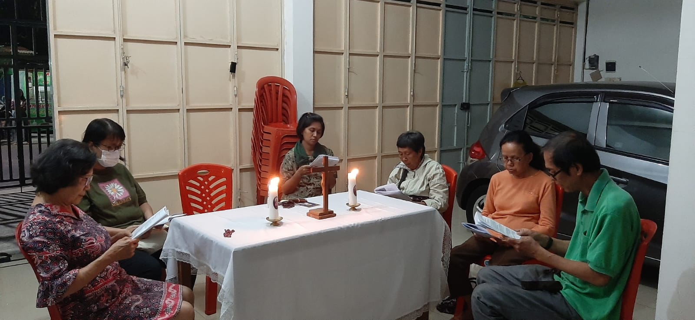
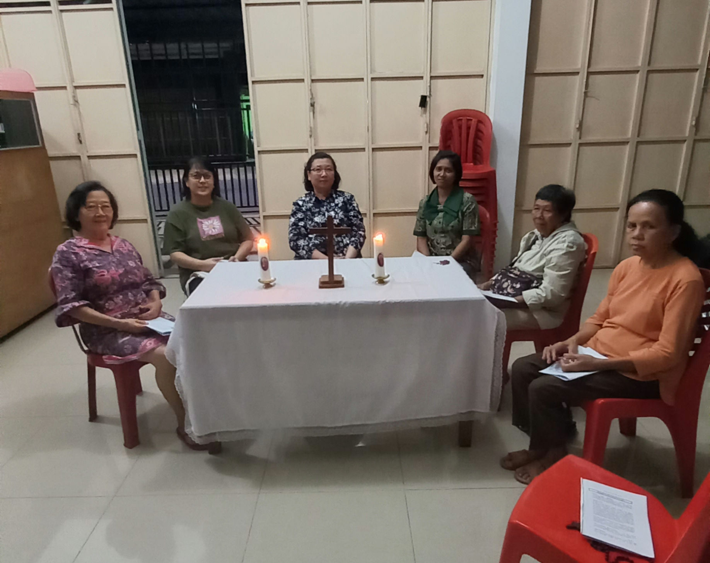

Penyegaran Rohani Kebangsaan dan doa Rosario ke 1
|  |  |
Sesuai dengan Arah Haluan Keuskupan Purwokerto 2022-2035, Gereja. Keuskupan Purwokerto menetapkan bulan Agustus sebagai Bulan Kebangsaan. Pada pertemuan yang pertama ini, kita hendak merefleksikan mengapa kita sebagai orang Katolik musti ikut terlibat dalam dalam hidup di tengah masyarakat. kita diajak untuk merefleksikan panggilan kita sebagai kaum awam Atas dasar Sakramen Baptis dan Krisma serta Sakramen Ekaristi, kita sebagai kaum awam dipanggil untuk menjalankan 5 tugas Gereja: Liturgia ( liturgi /pengudusan), Koinonia ( persekutuan/paguyuban ), Kerygma ( pewartaan) dan Diakonia (pelayanan), martiria ( kesaksian ). Dengan kata lain setiap umat beriman dipanggil untuk terlibat dalam hidup menggereja dan bermasyarakat. Hal ini ditegaskan pula dalam Lumen Gentium artikel 31 (LG 31), “….kaum awam wajib mencari kerajaan Allah, dengan mengurusi hal-hal yang fana dan mengaturnya seturut kehendak Allah. Mereka hidup dalam dunia, artinya: menjalankan segala macam tugas dan pekerjaan duniawi, dan berada di tengah kenyataan biasa hidup berkeluarga dan sosial”
Tantangan Hidup Berbangsa dan Bernegara
Mengamankan Pemilu 2024, Menjaga Keberagaman Indonesia Perhelatan Pemilu 2024, diawali per 1 Agustus 2022, dengan pendaftaran partai politik, tapi hawa rivalitas dan praktek politik identitas sudah terasa. Tanda-tanda itu ada, salah satunya kian menguatnya praktek-praktek intoleransi dalam hidup sehari-hari. Beberapa isu intoleransi seperti pemaksaan jilbab hingga polemik RUU Sisdiknas. Saudara sebangsa yang tidak sepaham dianggap liyan, dalam paham ini, NU saja diharamkan, apalagi Budha, Hindu dan Kristen. Terjadi ketegangan hubungan inter dan antar agama, kesatuan dan persatuan sebagai anak bangsa mulai terkoyak. Intoleransi dan radikalisme telah masuk ke semua lini institusi negara, salah satunya dunia pendidikan. Hal ini dibuktikan pelaku bom bunuh diri tahun 2018 di Surabaya yang melibatkan seorang siswa. Belajar dari Pilpres 2004, 2014 dan 2019 mengajarkan banyak hal. Th 2004: Megawati-KH Hasyim Muzadi berhadapan dengan SBY-JK. Dari aspek ke-Islaman, KH Hasyim Muzadi jauh lebih kuat daripada JK. Namun mengapa KH Hasyim Muzadi tidak dilirik? Pemilu 2014, Jokowi-JK tampil. JK seharusnya menjadi simbol Islam, namun mengapa kekuatan kelompok kanan bergeser ke Prabowo-Hatta Radjasa?
Pemilu 2019, Jokowi-KH Ma’ruf Amin, namun mengapa sosok ulama yang mengeluarkan Fatwa MUI untuk Ahok tersebut justru tidak menjadi simbol kelompok Islam, dan dukungan kelompok kanan justru diberikan pada Prabowo-Sandi. Pilpres adalah gambaran perang ideologi. Pancasila Vs Non Pancasila. Itulah yang menjadi alasan bahwa kelompok kanan tidak bisa direpresentasikan pada sosok yang Islami seperti KH Maruf Amin sekalipun. Siapapun figurnya, selama figur tersebut didukung kekuatan oleh nasionalis, maka kelompok kanan selalu akan berdiametral. Sebab yang mereka perjuangkan adalah ideologi. Perjuangan kelompok masyarakat ini adalah Pancasila, UUD 1945, Bhineka Tunggal Ika dan NKRI diganti dengan ideologi lain. Hal yang terburuk bisa dibayangkan, ketika Pemilu Indonesia tahun 2024, dimenangkan kelompok masyarakat yang menginginkan Pancasila, UUD 1945, Bhineka Tunggal Ika dan NKRI diganti dengan ideologi lain.
Pertanyaan refleksi: a. Apa tanggapan Bapak/Ibu atas bacaan di atas? b. Gereja Katolik sebagai bagian dari Negara Kesatuan Republik Indonesia, apa yang dapat kita lakukan?
Peneguhan:
Umat diajak untuk mengisi seluruh hidup bermasyarakat dan bernegara agar dipenuhi narasi tentang: Pancasila; kebangsaan; kebhinnekaan; persatuan-kesatuan bangsa; kebudayaan nasional; jati diri bangsa; menampilkan semangat rasa cinta tanah air. . Umat bangkit kesadarannya agar hidup bermasyarakat dan bernegaranya diisi oleh gagasan kebangsaan, srawung /bergaul dan berinteraksi dan mengajak saudara kita muslim membangun kesadaran alam pikir Islam yang toleran dari Islam yang menyatu dengan semangat hubul watan minal iman (nasionalisme/cinta lanah air bagian dari iman); Islam sebagai rahmatan lil alamin( islam yng membawa rahmat bagi semesta alam) Kalangan NU.
Politik adalah sarana efektif untuk menjalankan agenda politik kekuasaan di dalam melawan intoleransi dan radikalisme. Setidaknya partai politik dari golongan Islam Kebangsaan; dan golongan nasionalis memiliki ideologi, organisasi dan kekuasaan politik serta dukungan rakyat. Mari ramai-ramai sadar politik dan masuk dalam gerakan politik yang mencerdaskan kehidupan bangsa. Semua bergerak dalam satu narasi yang sama: narasi yang membumikan Pancasila; UUD 1945; Kebhinnekaan Indonesia; Budaya Indonesia bagi keutuhan NKRI. Jika semua menggunakan narasi ini dan secara kreatif mampu membangun kesadaran rakyat. Semua bergerak dengan narasi yang sama, sesuai bidangnya, maka akan bertemu dalam satu titik kemenangan yang sama. Jika semua bergerak atas panggilan nurani, maka ini akan membangkitkan gerakan yang luar biasa. Jangan biarkan negeri’besar seperti Indonesia, jatuh pada kelompok masyarakat yang anti kebhinnekaan!!
Ajakan Ajaran Gereja tentang Keterlibatan Umat Gereja sebagai sakramen. keselamatan hendak menghadirkan keselamatan Allah di tengah dunia. Oleh karena itu, tugas umat beriman adalah mewartakan kabar gembira; tidak hanya kepada dirinya sendiri (internal), melainkan kepada seluruh dunia (eksternal). Kaum awam dituntut menggunakan hak suaranya untuk menyuarakan kebenaran dan memberikan sumbangannya bagi terselenggaranya kesejahteraan umum (GS 30). Dalam segala tindakannya, umat beriman diharapkan memiliki sikap hormat dan cinta kepada sesama, juga kepada pihak yang secara sosial, politik maupun agama memiliki pandangan berbeda, Sikap hormat semacam itu menjadi landasan terjadinya dialog di dalam kehidupan bermasyarakat (GS 28). Dektrit tentang Kerasulan Awam menegaskan bahwa penggilan kristiani pada hakekatnya adalah panggilan untuk merasul. Kerasulan di bidang politik lebih leluasa dilaksanakan oleh kaum awam dibandingkan dengan hirarki karena panggilan khas kaum awam adalah terlibat secara langsung dengan masyarakat. Secara konkret keterlibatan kaum awam dalam dunia politik adalah keterlibatan dalam kehidupan bermasyarakat yaitu sebagai ragi ragi yang dijiwai semangat kristiani ikut serta mengembangkan masyarakat (Apostolicam Actuositatem 2). Gereja Katolik Indonesia melalui Konferensi Wali Gereja Indonesia (KWI) berupaya mengajak segenap umat Katolik, khususnya kaum awam untuk meningkatkan partisipasinya dalam seluruh bidang kehidupan, termasuk bidang politik. Kaum awam didorong untuk mengembangkan semangat pengabdian kepada masyarakat, bangsa dan negara agar semakin nyata upaya untuk mengikuti Kristus yang mewartakan Kerajaan Allah. - Cita-cita Gereja yang solider, dialogal dan memasyarakat hanya terwujud dengan kerja sama seluruh umat. Kaum awam adalah umat Allah yang terlibat langsung di masyarakat. Oleh karena itu wajah Gereja yang dialogal dan memasyarakat tampak nyata dari keterlibatan aktif umat beriman dalam lingkungan atau wilayah masing- masing. Semakin banyak umat yang terlibat dalam kepengurusan dan kegiatan masyarakat maka terjalin solidaritas dan dialog sehingga Gereja menjadi bagian solusi. Keterlibatan umat di pengurusan di cluster, RT, RW, Kelurahan dan organisasi kemasyarakatan menjadi sarana mengembangkan relasi dengan seluruh anggota masyarakat dan menghadirkan Gereja di tengah masyarakat. Seksi Kerasulan Awam dan HAK lingkungan/wilayah perlu memantau dan terus menerus mendorong agar Gereja dirasakan hadir sebagai garam dan terang di tempat dimana umat Katolik berada. Dalam merenungkan akan tugas perutusan sebagai murid- murid Kristus, kita akan merenungkan Surat Rasul Yakobus 2:14-17.
Inspirasi Kitab Suci Yakobus 2:14-17
Konteks
Iman tanpa perbuatan pada hakekatnya adalah mati
2:14 Apakah gunanya, saudara-saudaraku, jika seorang mengatakan, bahwa ia mempunyai iman, padahal ia tidak mempunyai perbuatan¹? Dapatkah iman itu menyelamatkan dia?
2:15 Jika seorang saudara atau saudari tidak mempunyai pakaian dan kekurangan makanan sehari-hari,
2:16 dan seorang dari antara kamu berkata: “Selamat jalan, kenakanlah kain panas dan makanlah sampai kenyang!”, tetapi ia tidak memberikan kepadanya apa yang perlu bagi tubuhnya, apakah gunanya itu?
2:17 Demikian juga halnya dengan iman: Jika iman itu tidak disertai perbuatan, maka iman itu pada hakekatnya adalah mati
Pertanyaan Refleksi :
Sudahkah Bpk/Ibu sebagai kaum awam terlibat dalam kerjasama dengan umat lain menjaga kebinekaan, toleransi ditengah masyarakat kita masing masing sebagai orang beriman ? beri contoh kerjasama tsb.
Apa yang sebaiknya dilakukan untuk menghadapi buliying/ejekan agama kita di masyarakat?
Pertemuan diakhiri dengan doa Rosario.
Semua materi tulisan dari Komisi Kerasulan Awam Keuskupan Purwokerto